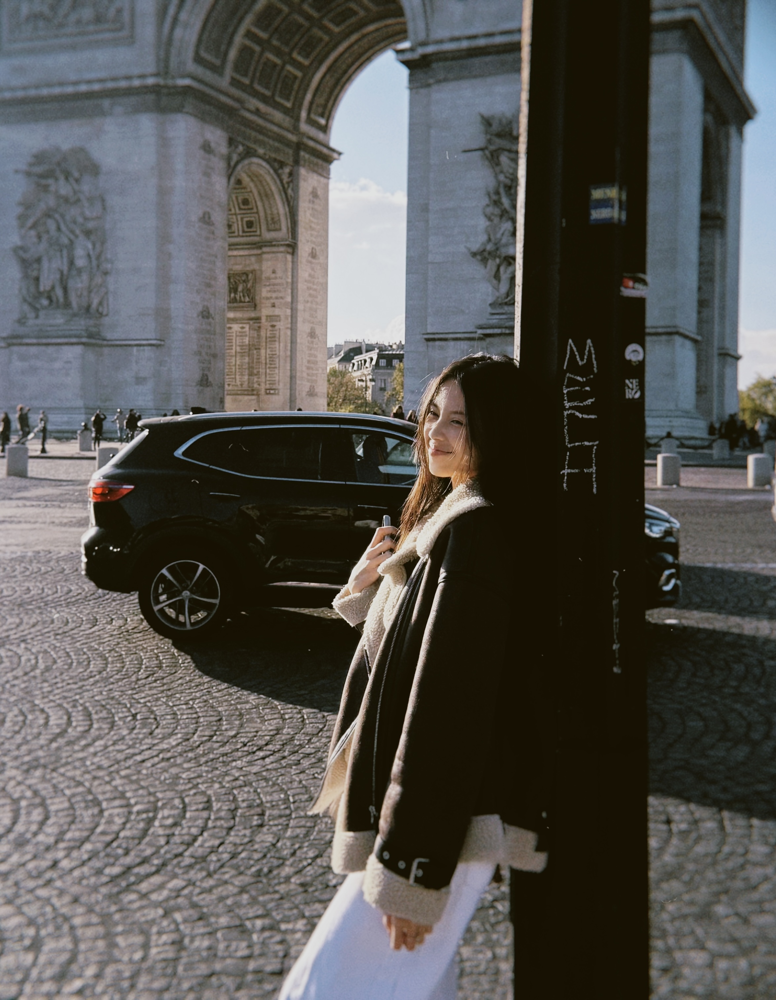

Bonjour & welcome to my digital cozy corner 🎀! Living in Paris in 20s has been a dream, and this is where I'm sharing 10 of my favorite 'firsts' in this romantic city of love 💌✨.
In a warn summer day, I went to Jardin du Luxembourg for a picnic with my schoolmate.
Savoring hot chocolate topped with whipped cream while watching people pass by on the streets at at Café de Flore.
Wandered through endless stacks of vintage books in one of Paris’s most magical bookstores, Shakespeare and Company.
My first time trying French beef steak at L'Atelier with "green" sauce and unlimited fries.
On Sunday, I spent hours digging through vintage trinkets at a local flea market, taking home a small piece of digital camera.
Dressed up as a masquerade girl for my costume party inside the iconic halls of Le Carmen.
Late-night walks along the river and watching the city light, my favorite quiet moment.
I stepped into a underground jazz club in La La Land scene and sipping warm wine, feeling just like the main character.
During the Rhode opening in Europe, I woke up at 6am to book a slot at Rhode café.
Watching a talented street artist paint the colorful corners of Montmartre, feeling like a tiny piece of Parisian story was captured forever.